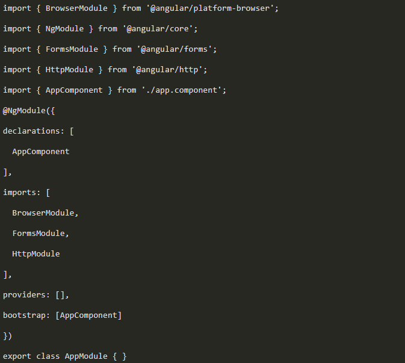

Project with Angular 2
Angular was born from a team of Google engineers as a framework to build applications that work on web, desktop and mobile.
What changed from Angular.js to Angular 2?
Although the focus remains Single Page Applications, Angular suffered a couple of changes:
Its core is now built with RxJS and TypeScript (remember that we have a guide on this superset), which ensures its speed and modularity. We will not have big changes as it was from Angular.js to Angular 2, now we will have semantic versions that will be retrocompatible.
The focus is on the components, making you have reusable UI.
Hello World with Angular CLI
The CLI (command line interface) are tools that help us simplify certain tasks that we would have to do manually with some framework / library / software. In the case of Angular, it provides us with tools that range from creating a project from scratch to a local server for testing. To install Angular CLI we must have previously installed Node.js and execute the following command:
Once installed Angular CLI we can create a project in a simpler way without having to create all the files manually. We are going to create our 'Hello World', the first thing we have to do is stop in the folder where we want to have our project and then execute the following line:
The wait will depend, among many things, on your Internet connection, but do not worry, the Angular CLI will notify us when the project is ready to use.
But how do we execute a 'Hello World'? It is very simple, within angular cli we have a tool that will help us to raise a local server with our project. To use the tools we need to be inside the project folder (/ ProjectName) and execute the.
And then, when entering the local address proposed by the CLI, we will see that our project was created correctly and we can start working with it. "Hello to the World of Angular 2".
App works!
Structure of an application in Angular
To begin to understand how an application works in Angular, we will begin by understanding the structure of a project. You will notice that from the CLI some files and folders were created that perhaps you had never seen, we will review from the most external files to the most internal ones.
Configuration files:
editorconfig: It is the configuration for our editor, but this really does not change. .gitignore: Angular CLI generates a git client to work in a versioned way in our project and then upload it to Github, for example. There are files that are not worth having in each local version and this is where we ignore those files. angular-cli.json: This is where we consult the CLI configuration. karma.conf.js: It is the configuration file for the tests. package.json: Is the configuration that describes the dependencies we need from Node.js. protractor.conf.js: It is the configuration of the e2e tests with Jasmine. README.md: It is the readme that has any shared project in Github, but in this case you can find a guide of the Angular CLI commands. Tslint.json: It is the Linter configuration for typescript, it really does not need to be modified. / e2e: The files inside e2e describe a type of testing called End to End, this is executed with the help of Jasmine.
Node_modules: This is where all our Node.js dependencies of our project are located.
src: This is perhaps the most important folder of all and where you will be most of your time, since it contains all the code of the

We will detail everything that makes up the / src folde
/ app: In this folder and by folders, is where we will have all our components, services and those elements that have to do with the views of our application, do not worry, later we will explain all the elements that have a component in Angular . / assets: In this folder we will have those assets that are not specific to a component in Angular, such as images, videos or files of any kind. / environments: It allows us to modify the working environment in which we are, therefore, when you bring something to production, we will modify the respective TypeScript files. Favicon.icon: You can replace it with the icon of your preference to obtain a result like the following:
Index.html: This is the main HTML and this is where our Single Web Application will be. Main.ts: It is the first file to be executed, it contains all the configuration parameters, the application as the environment in which we work, in which file we have declared all our components, etc. Polyfills.ts: This file assures us that we will have compatibility in all modern browsers. styles.css: These are the general styles of the project. test.ts: Here we can continue adding unit tests to our tsconfing.json components: If you remember the TypeScript article, this is the superset's own configuration file.
How does a component work in Angular?
We failed to understand what is inside / app, but this is very hand of how a component is composed in Angular. A component in Angular has 3 parts:
1-Un template o estructura HTML
2-A CSS style sheet for the component
3-All the functionality of the component using TypeScript (although you could also use JS)
It is important that the names of the files are of the type nombre.component.extensión:
Once the above is clarified, you may have noticed that / app is a component. Let's see the file that describes the app.component.ts functionality:
Our template in this example has only:
h1-tittAnd the style sheet has nothing at the moment. Well, then: Where does our component end? Remember that we have our index.html:
What other file did we lack? Our app.module.ts This file is responsible for understanding what components and dependencies we have in our application. By the way, every time you create a new component, you must declare it in this file.
And that's it, that's how you learned how to make your first component in Angular. We leave you a challenge: Without using the Angular CLI, you must create a new component in this application that is called Platzi and must be below